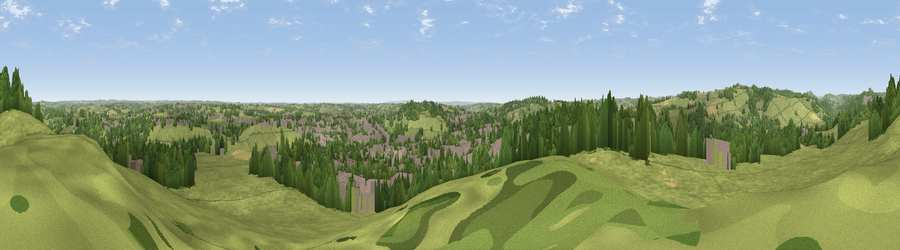

Viewpoint near Boothgate
#13314 in England · top 8% of its area beats it · near BoothgateThe view, rendered

A 360° render of this exact spot computed from the terrain model, tree cover and land cover — summer colours, afternoon light, calibrated against photographs of famous viewpoints. Real trees, hedges and buildings will differ in detail.
The panorama
Grey silhouette: terrain skyline in each direction (720 bearings, Earth curvature and refraction included). Dashed green: skyline with trees (+15 m) and buildings (+8 m) as obstacles. Blue strip: how far the ground is visible on each bearing.
Where the view opens
Wedge length = distance to the farthest visible ground on that bearing (vegetation-aware). Rings at 10, 25 and 50 km.
What fills the view
59% grassland · 23% woodland · 14% built-up · 3% cropland
Angular shares of the visible panorama (visual magnitude), not map area. Landscape diversity 0.45 (0–1 Shannon).
Key numbers
More beautiful places nearby
The staircase of upgrades: each row has a higher view potential than everything closer. Driving times are estimates from straight-line distance, calibrated against real road routing — check an actual route before setting out.
| Place | Direction | Drive | Score |
|---|---|---|---|
| Firestone Hill | SW · 4 km | ~8 min | 65.8 |
| Viewpoint near Hazelwood | SSW · 4 km | ~9 min | 66.3 |
| The Tors | N · 5 km | ~10 min | 68.9 |
| Alport Height | WNW · 6 km | ~12 min | 73.9 |
| Tissington Hill | W · 21 km | ~35 min | 75.5 |
| Viewpoint near Stanton under Bardon | SSE · 37 km | ~56 min | 76.0 |
| Viewpoint near Woodhouse Eaves | SSE · 38 km | ~56 min | 77.7 |
| Viewpoint near Mow Cop | W · 50 km | ~71 min | 78.9 |
53.03821, -1.46866 · source: screening · position refined by local search. Computed location — check access rights before visiting.